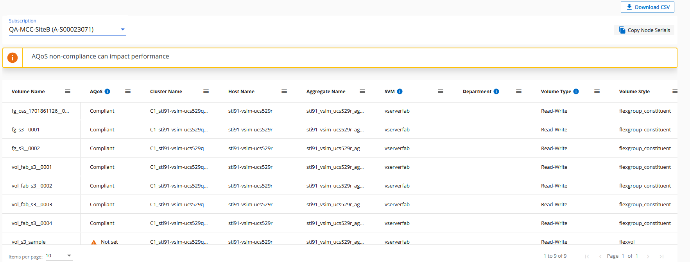

NetApp Keystone サービス
NetApp Keystone サービス
Keystone向けのDigital Advisorダッシュボードとレポート作成
 変更を提案
変更を提案
Active IQ デジタルアドバイザ（デジタルアドバイザ）ダッシュボードでは、NetApp Keystone サブスクリプションに関連する使用状況を監視し、レポートを生成できます。Keystoneサービスにサブスクライブすると、Digital Advisorダッシュボードの* Keystone Subscriptions *ウィジェットでサブスクリプションと使用量の詳細を確認できます。

|
ここで入手できる情報は、ONTAP とStorageGRID の両方を環境 に掲載しています。例外は関連するセクションで指摘されています。 |
[Keystone Digital Advisor]ウィジェットの詳細については、を参照してください "NetApp Keystone サブスクリプションを使用して容量利用率を表示します"。
Keystoneサブスクリプションと使用量の詳細を表示するには、次の手順を実行します。
-
Digital Advisorにログインします。Keystoneサブスクリプション*ウィジェットが表示され、購入したKeystoneサービスに対する使用容量が表示されます。
-
ウィジェットで[詳細を表示]をクリックし、[Keystoneサブスクリプション]ページにボリュームに関する使用状況の詳細とアラートを表示します。または、左側のナビゲーションペインで[全般]>[Keystoneサブスクリプション]に移動します。
サブスクリプションの詳細、各サービスレベルの使用状況グラフ、ボリュームの詳細が、 Keystoneサブスクリプション*画面の別 々 のタブに表示されます。
|
|
Keystoneサブスクリプションの容量消費量は、ダッシュボードとレポートにTiB単位で表示され、小数点以下2桁に四捨五入されます。使用量が0.01TiB未満の場合は、と表示されます 0 または No Usage。これらの画面のデータは、UTC時間（サーバのタイムゾーン）で表示されます。クエリの日付を入力すると、自動的にUTC時間であると見なされます。
|
利用率指標の詳細については、を参照してください。 "サービスレベルの指標と定義"。Keystoneで使用されるさまざまな容量については、を参照してください "Keystone サービスの容量の定義"。
サブスクリプション
サブスクリプションのリストは、*サブスクリプション*タブで表示できます。
 タブのイメージ"]
タブのイメージ"]
次の情報が表示されます。一部のフィールドや列では、情報や警告アイコン、およびデータに関する追加情報を表示するツールチップが表示される場合があります。
-
サブスクリプション番号：ネットアップが割り当てたKeystoneサブスクリプションのサブスクリプション番号。
-
トラッキングID：登録の有効化時に割り当てられたトラッキングID。これは、サブスクリプションとサイトごとに一意のIDで、サブスクリプションの追跡に使用されます。

サブスクリプションにデータ保護サービスレベルまたはレートプランが割り当てられている場合は、ツールチップを使用してMetroClusterセットアップでパートナーサブスクリプションの追跡IDを確認できます。MetroCluster構成のパートナーサブスクリプション別の詳細な消費状況を表示する方法については、を参照してください "データ保護のリファレンスチャート"。 -
使用タイプ：複数のKeystone（バージョン1）またはKeystone STaaS（バージョン2）サブスクリプションに登録済みの場合があります。サービスレベルのレートプランルールは、2つのサブスクリプションタイプで異なる場合があります。この列の値を見ると、使用タイプがプロビジョニング済みの使用量と論理的な使用量のどちらに基づいて課金されているかがわかります
v1またはv2。Keystone STaaSの詳細については、を参照してください "Keystone STaaSのドキュメント"。 -
請求期間：月、四半期、年など、サブスクリプションの請求期間。
-
開始日：サブスクリプションの開始日。
-
終了日：サブスクリプションの終了日。毎月自動的に更新される月額課金制のサブスクリプションをお持ちの場合は、
Month-on-month終了日の代わりに。この日付に基づいて、有効期限が近づいている、または自動更新ポリシーが適用されているサブスクリプションに関する情報メッセージが表示される場合があります。 -
使用状況：サブスクリプションの使用量または使用率が高すぎることを示します。消費レコードの数を最も高くする場合は、この列でリストをソートできます。
-
 :サブスクリプションのこのアイコンをクリックすると、[現在の使用状況]タブが開き、そのサブスクリプションの詳細が表示されます。
:サブスクリプションのこのアイコンをクリックすると、[現在の使用状況]タブが開き、そのサブスクリプションの詳細が表示されます。 -
 ：このアイコンをクリックすると、* Capacity Trend *タブが開き、このサブスクリプションに含まれる各サービスレベルの使用履歴データを確認できます。
：このアイコンをクリックすると、* Capacity Trend *タブが開き、このサブスクリプションに含まれる各サービスレベルの使用履歴データを確認できます。
各サブスクリプションの使用状況を確認するには、次の使用状況インジケータを参照してください。

 ：サービスレベルのコミット済み容量に照らして、使用容量は記録されません
：サービスレベルのコミット済み容量に照らして、使用容量は記録されません
 ：コミット済み容量の80%以内で、通常消費量が発生します
：コミット済み容量の80%以内で、通常消費量が発生します
 ：最大消費量。つまり、使用量がコミット済み容量の100%以上に達しようとしています。*Consumed *列には、コミット済み容量の80%を超える消費量を示すインジケータが表示されます
：最大消費量。つまり、使用量がコミット済み容量の100%以上に達しようとしています。*Consumed *列には、コミット済み容量の80%を超える消費量を示すインジケータが表示されます
 ：消費量がバースト制限内にあります。バースト消費量とは、サービスレベルの100%のコミット済み容量を超え、120 %などの合意されたバースト使用制限の範囲内である消費量のことです
：消費量がバースト制限内にあります。バースト消費量とは、サービスレベルの100%のコミット済み容量を超え、120 %などの合意されたバースト使用制限の範囲内である消費量のことです
 ：指定されたバースト制限を超過した消費量を示します
：指定されたバースト制限を超過した消費量を示します
現在の使用状況
サブスクリプションの詳細を確認するには、*現在の使用状況*タブをクリックし、必要なサブスクリプション番号を選択します。
 タブ"]
タブ"]
サービスレベル名、コミット済み容量、消費済み容量、使用可能容量、現在のバースト使用量および蓄積バースト使用量などの詳細は、TiBで表示されます。
|
|
。 |
Keystoneストレージサービスと関連するサービスレベルについては、を参照してください "サービスレベル"。
容量のトレンド
[容量のトレンド]*タブには、特定の期間のKeystoneサブスクリプションの履歴データが表示されます。縦のグラフには、選択した期間の使用状況の詳細と、レポートを比較して生成するための適切なインジケータが表示されます。
-
[Capacity Trend]*タブをクリックします。
-
詳細を表示するサブスクリプションを選択します。デフォルトでは、アカウント名の最初のサブスクリプションが選択されています。
-
履歴データを表示して容量の使用状況のトレンドを分析する場合は、[容量のトレンド]*を選択します。請求書が生成されたバースト使用量の履歴データを表示する場合は、 Invoiced Accrued Burst *を選択します。このデータを使用して、請求書に従って請求された使用量を分析できます。
容量のトレンドを表示
詳細はこちら。
[Capacity Trend]*オプションを選択した場合は、次の手順を実行します。
-
[開始日*（From Date）]および[終了日*（* To Date）]フィールドのカレンダーアイコンから時間範囲を選択します。クエリの日付範囲を選択します。日付範囲には、月の初め、サブスクリプションの開始日から現在の日付、またはサブスクリプションの終了日を指定できます。将来の日付は選択できません。
最適なパフォーマンスとユーザーエクスペリエンスを実現するには、クエリの日付範囲を3カ月に制限します。 -
[ * 詳細の表示 * ] をクリックします。選択した期間に基づいて、各サービスレベルのサブスクリプションの消費履歴データが表示されます。
棒グラフには、その日付範囲について、サービスレベル名とそのサービスレベルに対する消費容量が表示されます。収集の日時がグラフの下部に表示されます。クエリの日付範囲に基づいて、使用状況グラフは30のデータ収集ポイントの範囲で表示されます。グラフにカーソルを合わせると、そのデータ収集ポイントでのコミット済み容量、消費容量、バースト、バースト制限データを基準にした使用量の内訳が表示されます。

棒グラフの以下の色は、サービスレベルで定義された消費容量を示します。グラフ全体で月単位のデータが縦線で区切られています。
-
緑：80%以内。
-
オレンジ：80%～100%。
-
赤：バースト時の使用状況（合意済みのバースト制限に対するコミット済み容量の100%）
-
紫：バースト制限の上、または
Above Limit。
|
|
空のグラフは、そのデータ収集ポイントで使用可能なデータが環境になかったことを示します。 |
切り替えボタン*[Show Current Usage]*をクリックすると、現在の課金期間の消費量、バースト使用量、発生バーストデータを確認できます。これらの詳細は、クエリの日付範囲に基づいていません。
-
現在の消費容量：サービスレベルに定義されている消費容量（TiB）を示します。このフィールドは特定の色を使用します。
-
色なし：バーストまたはそれ以上のバースト使用量。
-
グレー：使用できません。
-
緑：コミット済み容量の80%以内
-
オレンジ：バースト容量にコミットされたの80%。
-
-
* Current Burst *：定義されたバースト制限内またはそれ以上の消費容量を示すインジケータ。合意されたバースト制限内の使用量（コミット済み容量を20%超過した場合など）は、バースト制限内に収まります。それ以上の使用量は、バースト制限を超えた使用量とみなされます。このフィールドには特定の色が表示されます。
-
色なし：バースト使用量はありません。
-
赤：バースト使用量。
-
紫：バースト制限を超えています。
-
-
* Accrued Burst *：現在の請求期間の月単位で計算された、発生したバーストの使用量または消費容量を示すインジケータ。蓄積されたバースト使用量は、サービスレベルのコミット済み容量と消費済み容量に基づいて計算されます。
(consumed - committed)/365.25/12。
請求済みバースト容量の表示
詳細はこちら。
[Invoiced Accrued Burst]オプションを選択した場合、デフォルトでは、過去12カ月間の月単位のバースト使用量データが表示されます。過去30カ月までの日付範囲で照会できます。請求されたデータの棒グラフが表示され、使用量がまだ請求されていない場合は、その月の_Pending_が表示されます。
|
|
課金される累積バースト使用量は、サービスレベルのコミット済み容量と消費容量に基づいて、課金期間ごとに計算されます。 |
 グラフ"]
グラフ"]
この機能は、プレビューのみのモードで使用できます。この機能の詳細については、KSMにお問い合わせください。
データ保護のリファレンスチャート
詳細はこちら。
データ保護サービスをサブスクライブしている場合は、*[容量のトレンド]*タブでMetroClusterパートナーサイトの消費データの内訳を確認できます。
データ保護の詳細については、を参照してください "データ保護"。
ONTAPストレージ環境内のクラスタがMetroClusterセットアップで構成されている場合は、Keystoneサブスクリプションの消費データが同じ履歴データチャートに分割されて、基本のサービスレベルのプライマリサイトとミラーサイトでの消費量が表示されます。
|
|
消費棒グラフは、基本サービスレベルに対してのみ分割されます。データ保護サービスレベルでは、この境界は表示されません。 |
データ保護サービスレベルでは、総消費量がパートナーサイト間で分割され、各パートナーサイトでの使用量が別 々 のサブスクリプション（プライマリサイト用とミラーサイト用）に反映されて課金されます。そのため、* Capacity Trend *タブでプライマリサイトのサブスクリプション番号を選択すると、DPサービスレベルの消費グラフにはプライマリサイトの個別の消費の詳細のみが表示されます。MetroCluster構成の各パートナーサイトがソースおよびミラーとして機能するため、各サイトでの合計消費量には、そのサイトに作成されたソースボリュームとミラーボリュームが含まれます。
|
|
[現在の使用状況]タブのサブスクリプションのタッキングIDの横にあるツールチップは、MetroClusterセットアップでパートナーサブスクリプションを識別するのに役立ちます。 |
基本のサービスレベルの場合、各ボリュームはプライマリサイトとミラーサイトでプロビジョニング済みとして課金されるため、プライマリサイトとミラーサイトでの使用量に応じて同じ棒グラフが分割されます。
次の図は、_Extreme_service level（基本サービスレベル）とプライマリサブスクリプション番号のグラフを示しています。同じ履歴データチャートは、プライマリサイトに使用されるカラーコードのより明るい色合いでミラーサイトの消費をマークします。マウスにカーソルを合わせると、プライマリサイトとミラーサイトの消費量の内訳（TiB）がそれぞれ1.02TiBと1.05TiBで表示されます。

_Data-Protect Extreme_service level（データ保護サービスレベル）のグラフは次のように表示されます。

セカンダリサブスクリプションを確認すると、パートナーサイトと同じデータ収集ポイントの_Extreme_service level（基本のサービスレベル）の棒グラフが反転し、プライマリサイトとミラーサイトでの消費量の内訳がそれぞれ1.05TiBと1.02TiBであることがわかります。

_Data-Protect Extreme_service level（データ保護サービスレベル）の場合、パートナーサイトと同じ収集ポイントに次のようなグラフが表示されます。

MetroCluster によるデータの保護方法については、を参照してください "MetroCluster のデータ保護とディザスタリカバリについて理解する"。
ボリュームとオブジェクト
[ボリュームとオブジェクト]*タブでは、ONTAPでボリュームの使用状況やその他の詳細を確認できます。StorageGRID の場合、オブジェクトストレージ環境でのノードとその個 々 の使用状況が表示されます。
|
|
このタブの名前は、サイトでの導入の種類によって異なります。ボリュームとオブジェクトストレージの両方がある場合は、[ボリュームとオブジェクト]*タブが表示されます。ストレージ環境にボリュームしかない場合は、名前が Volumes に変わります。オブジェクトストレージの場合のみ、[オブジェクト]*タブが表示されます。 |
ONTAPボリュームの詳細の表示
詳細はこちら。
ONTAPの場合、*[ボリューム]*タブには、Keystoneサブスクリプションで管理されるストレージ環境内のボリュームの、使用容量、ボリュームタイプ、クラスタ、アグリゲート、サービスレベルなどの情報が表示されます。
-
[* Volumes （ボリューム） ] タブをクリックします
-
サブスクリプション番号を選択します。デフォルトでは、使用可能な最初のサブスクリプション番号が選択されています。
ボリュームの詳細が表示されます。列見出しの横にある情報アイコンにマウスを合わせると、列をスクロールして詳細を確認できます。列でソートしたり、リストをフィルタして特定の情報を表示したりできます。
データ保護サービスの場合は、ボリュームがMetroCluster構成のプライマリボリュームかミラーボリュームかを示す列が表示されます。個 々 のノードシリアル番号をコピーするには、*ノードシリアルのコピー*ボタンをクリックします。
タブ"]
StorageGRIDのノードと使用状況を表示
詳細はこちら。
StorageGRIDの場合、オブジェクトストレージのノードの論理使用量が表示されます。
-
[オブジェクト]タブをクリックします。
-
サブスクリプション番号を選択します。デフォルトでは、使用可能な最初のサブスクリプション番号が選択されています。サブスクリプション番号を選択すると、オブジェクトストレージの詳細のリンクが有効になります。

-
リンクをクリックすると、各ノードのノード名と論理使用量の詳細が表示されます。

パフォーマンス
*[パフォーマンス]*タブでは、Keystoneサブスクリプションで管理されているONTAPボリュームのパフォーマンス指標を表示できます。
|
|
このタブはオプションで使用できます。このタブの表示については、サポートにお問い合わせください。 |
-
[パフォーマンス]*タブをクリックします。
-
サブスクリプション番号を選択します。デフォルトでは、最初のサブスクリプション番号が選択されています。
-
リストから必要なボリューム名を選択します。
または、
アイコンをクリックONTAPして、[ボリューム]*タブに移動します。 -
クエリの日付範囲を選択します。日付範囲には、月の初め、サブスクリプションの開始日から現在の日付、またはサブスクリプションの終了日を指定できます。将来の日付は選択できません。
取得される詳細は、各サービスレベルのサービスレベル目標に基づいて決まります。たとえば、ピークIOPS、最大スループット、ターゲットレイテンシなどの指標は、サービスレベルの個 々 の設定によって決まります。設定の詳細については、を参照してください。 "サービスレベル"。
|
|
[SLO Reference Line]*チェックボックスを選択すると、IOPS、スループット、レイテンシのグラフがサービスレベルのサービスレベル目標に基づいて表示されます。それ以外の場合は、実際の数値で表示されます。 |
水平グラフには、5分間隔の平均パフォーマンスデータがクエリの日付範囲に従って表示されます。グラフをスクロールして特定のデータポイントにカーソルを合わせると、収集したデータにさらにドリルダウンできます。
以降のセクションでは、サブスクリプション番号、ボリューム名、選択した日付範囲の組み合わせに基づいてパフォーマンス指標を表示および比較できます。詳細は、ボリュームに割り当てられているサービスレベルに応じて表示されます。クラスタ名とボリュームタイプ（ボリュームに割り当てられている読み取り権限と書き込み権限）を確認できます。ボリュームに関連する警告メッセージも表示されます。
IOPS/TiB
このセクションには、クエリの日付範囲に基づいて、ボリューム内のワークロードの入出力グラフが表示されます。サービスレベルの最大IOPSと現在のIOPS（クエリの日付範囲ではなく過去5分間）が、その期間の最小IOPS、最大IOPS、平均IOPS（IOPS/TiB）とともに表示されます。
 セクション"]
セクション"]
スループット（MBps / TiB）
このセクションには、クエリの日付範囲に基づいて、ボリューム内のワークロードのスループットグラフが表示されます。サービスレベルの最大スループット（SLO Max）と現在のスループット（クエリの日付範囲ではなく過去5分間）が、その時間範囲の最小スループット、最大スループット、平均スループット（MBPS/TiB）とともに表示されます。

レイテンシ（ミリ秒）
このセクションには、クエリの日付範囲に基づいて、ボリューム内のワークロードのレイテンシグラフが表示されます。サービスレベル（SLOターゲット）の最大レイテンシと現在のレイテンシ（クエリの日付範囲ではなく過去5分間）が、その時間範囲の最小、最大、平均レイテンシ（ミリ秒）とともに表示されます。
このグラフの色は次のとおりです。
-
水色：レイテンシ。Keystoneサービス以外のレイテンシを含む実際のレイテンシ。これには、ネットワークとクライアントの間で発生するレイテンシなど、追加のレイテンシが含まれる場合があります。
-
濃い青：有効なレイテンシ。実効レイテンシとは、SLAに関してお客様のKeystoneサービスにのみ適用されるレイテンシのことです。

使用済み論理容量（TiB）
このセクションには、ボリュームのプロビジョニング済み容量と使用済み論理容量が表示されます。現在の使用済み論理容量（クエリの日付範囲ではなく過去5分間）と、その期間の使用量の最小値、最大値、平均値がTiB単位で表示されます。このグラフでは、グレーの領域がコミット済み容量、黄色のグラフが論理的な使用状況を示しています。

レポートを生成します
各タブの*[Download CSV]*ボタンをクリックすると、サブスクリプションの詳細、期間内の使用履歴データ、ボリュームの詳細に関するレポートを生成して表示できます。  アイコン"]
アイコン"]
詳細はCSV形式で生成され、あとで使用できるように保存できます。
[Capacity Trend]*タブでは、クエリの日付範囲のデフォルトの30データ収集ポイント、または日次レポートのレポートをダウンロードできます。

グラフデータが変換される* Capacity Trend *タブのサンプルレポート：

アラートを表示します
ダッシュボードのアラートは警告メッセージを送信するため、ストレージ環境で発生している問題を把握することができます。
アラートには次の2種類があります。
-
情報:サブスクリプションがまもなく終了するなどの問題については、情報アラートを表示できます。情報アイコンにカーソルを合わせると、問題 の詳細が表示されます。
-
警告：非順守などの問題は警告として表示されます。たとえば、管理対象クラスタにアダプティブQoS（AQoS）ポリシーが適用されていないボリュームがある場合、警告メッセージが表示されます。警告メッセージのリンクをクリックすると、*[ボリューム]*タブに準拠していないボリュームのリストが表示されます。
単一のサービスレベルプランまたはレートプランにサブスクライブしている場合、非準拠ボリュームのアラートは表示されません。 AQoSポリシーの詳細については、を参照してください "課金およびアダプティブ QoS ポリシー"。

これらの注意および警告メッセージの詳細については、ネットアップサポートにお問い合わせください。